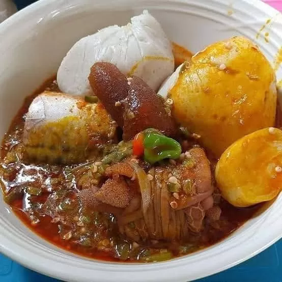

Bobotie

Bobotie is a traditional South African dish with roots in the Cape Malay community, blending influences from Indonesian, Dutch, and local African cuisines. It consists of spiced minced meat baked with an egg-based topping, often served with yellow rice, chutney, or vegetables. Bobotie reflects South Africa’s rich history of cultural fusion, brought about by centuries of trade, migration, and colonial influence. Its sweet and savory flavors symbolize the creativity of South African cooking, while its preparation for family gatherings and festive occasions highlights the importance of community, hospitality, and celebration in the country’s culinary culture.
Cooking Instructions
Click to view instructions
- Preheat the oven to 180°C (350°F).
- Prepare the bread mixture: Soak 2 slices of white bread in ½ cup of milk until soft, then squeeze out excess milk and set aside.
- Cook the meat: In a pan, sauté 1 chopped onion in 2 tbsp oil until soft. Add 500g minced beef or lamb and cook until browned.
- Add seasonings: Stir in 1–2 tsp curry powder, 1 tsp turmeric, 1 tsp ground coriander, salt, pepper, and optional chili flakes.
- Transfer to baking dish: Press the meat mixture evenly into a greased baking dish.
- Prepare topping: Beat 2 eggs with ½ cup milk and pour over the meat mixture.
- Bake: Bake in the preheated oven for 30–40 minutes, or until the topping is set and lightly golden.
- Serve: Serve warm with yellow rice and sambal or chutney.
Ingredients:
- 500g minced beef or lamb
- 1–2 tsp curry powder
- 1 tsp ground turmeric
- 1 tsp ground coriander
- 1 onion, chopped
- 2 slices white bread
- ½ cup milk (for soaking bread)
- 2 tbsp oil (for sautéing)
- 2 tbsp chutney
- ¼ cup raisins
- Salt and pepper to taste
- 2 eggs
- Steamed vegetables